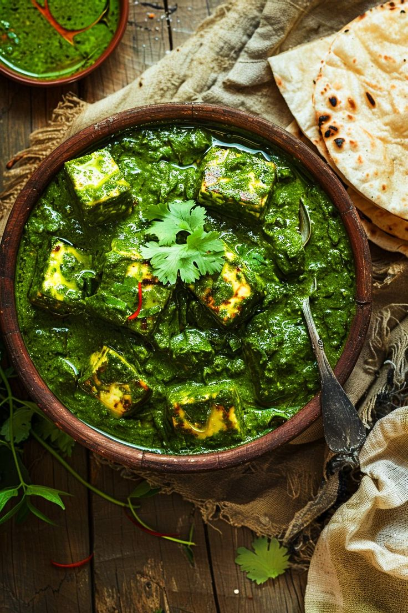

Palak Paneer
A flavorful Indian vegetarian dish made with puréed spinach and paneer cubes cooked with spices. Creamy, nutritious, and delicious!

Ingredients
- 200g paneer (cubed)
- 250g spinach leaves (washed and blanched)
- 1 onion, chopped
- 1 tomato, pureed
- 1 tsp ginger garlic paste
- 1/2 tsp cumin seeds
- 1/2 tsp garam masala, salt, turmeric
Instructions
- Blanch spinach, cool and blend to a puree.
- Sauté cumin and onions until golden, add ginger garlic paste.
- Add tomato puree and spices. Cook till oil separates.
- Add spinach puree and paneer. Simmer for 5–10 minutes.
- Finish with cream or butter (optional) and serve hot.